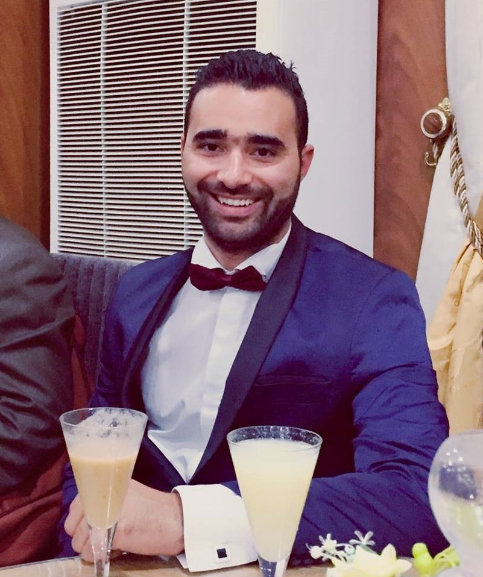
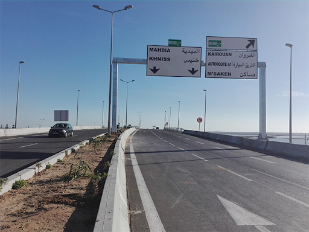
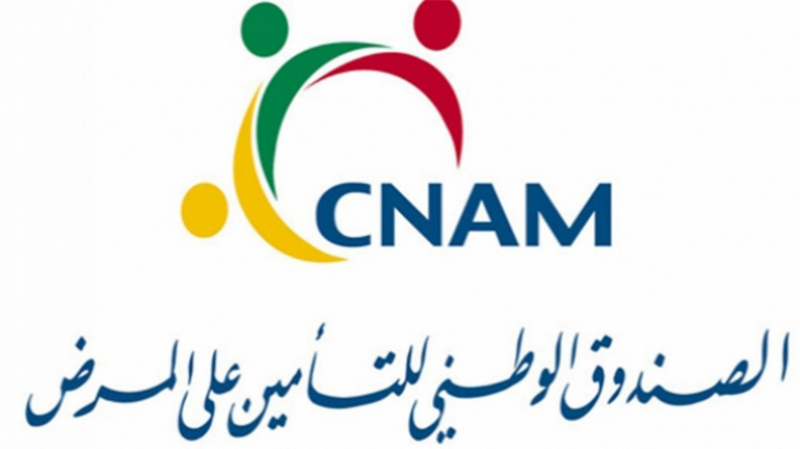

Neguez Aymen
Civil engineer and Web developer
My Works
SEGC ELTAIEF,civil engineering - Tunisia (Engineer intership)
February–July 2018
The end of studies project topic: A study of the structure and design
of the headquarters of the regional office of the National Social
Security Fund Sousse- Tunisia.
SEGC ELTAIEF,civil engineering - Tunisia (Technician intership)
August 2017
Designing reinforced concrete structures for several buildings.
RIBAT INGENIERIE,civil engineering - Tunisia (Technician intership)
July 2017
Designing reinforced concrete structures for several buildings.
GLOULOU company, buildings constructing and civil engineering - Tunisia ( Worker interhsip)
August2016
In the new branch at Monastir Khniss, on the regional road number 92.
SEGC ELTAIEF,civil engineering - Tunisia (civil engineer)
Since July 2018
Studying and designing different structures (buildings, highways,
hydraulic structures...)
And this is Some pictures
 ACADEMIC QUALIFICATIONS
Polytechnic univerity of Sousse - Tunisia
2014-2018
Receiving the civil engineering degree from the Polytechnic university of Sousse
Science faculty of Monastir-Tunisia
2012-2014
2nd year bachelor’s degree in computer science
Preparatory institute for engineering studies of Monastir-Tunisia
2009-2012
Discipline: mathematics - physics
Hight school of Jemmal-Tunisia
June 2009
Receiving the high school diploma, mathematical section
SKILLS
Office software
- Word
- Excel
- Powerpoint
Speciality software
- AutoCad
- Arche
- Robot
- Revit
- Piste
- Maple
Languages
- Arabic: Native
- French: Bilingual proficiency
- English: Intermediate
Hobbies and Interests
- Sports
- Cinema
And this is My favourite Movie